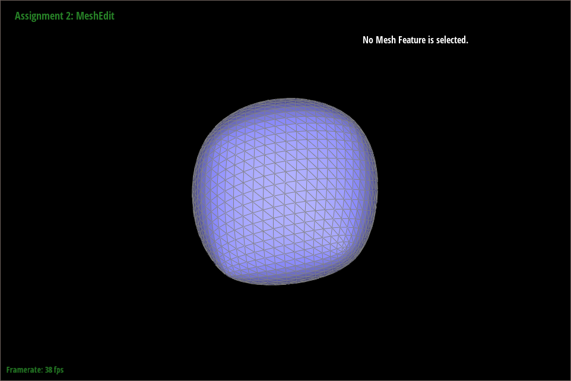
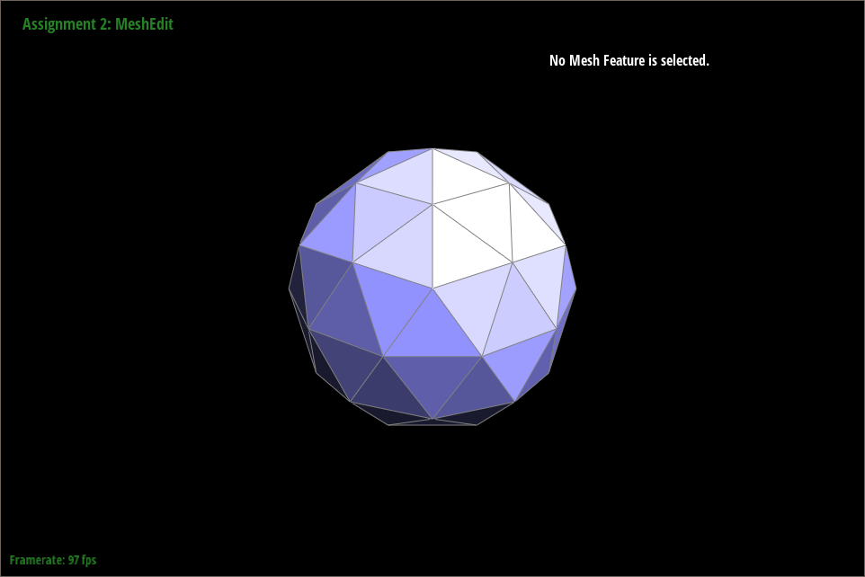

Overview
Implementing the drawing of Bezier curves and surfaces for the first part of the assignment was relatively simple. Taking control points as an input, our algorithm performs a series of recursive linear interpretations to implement Casteljau's algorithm in both 2D and 3D space. The latter part of the assignment dealt with the editing of triangle meshes. The first task involved implementing area-weighted normals. The crux of this task was finding the formula for calculating the area of a triangle in 3-dimensional space. Edge flips and edge splits were the next two parts. This task was far more complex than the previous tasks. Our initial attempt at edge flips involved meticulously rotating each pointer of an edge. However, this approach left room for error in reassigning all the pointers. For both flips and splits, we took diagrams of the triangles, labeling each half-edge, edge, vertex, and face meticulously in both the pre-flip and post-flip diagrams and reassigning each pointer based on our diagram. Edge splits involved an additional step of creating new vertices, edges, and faces as well. The final task of the assignment, loop subdivision, involved both edge splits and then flips. An issue we initially ran into was the labeling of "new" edges that were created from edge splitting and making sure we weren't flipping too many edges. Overall, the project helped solidify the more abstract concepts covered in lecture and taught both us partners the importance of drawing out diagrams and writing out pseudocode before implementing--a technique that saved us far more time debugging.
Section I: Bezier Curves and Surfaces
Part 1: Bezier Curves with 1D de Casteljau Subdivision
Briefly explain de Casteljau's algorithm and how you implemented it in order to evaluate Bezier curves.
De Casteljau's algorithm is an algorithm to evaluate Bezier Curves given a
set of n control points and parameter t. The
algorithm is implemented by recursively linearly interpolating at the
parameter t each set of pairs of control points in order to
compute the next subdivision level's set of intermediate control points. One
step produces n - 1 intermediate control points, and the
recursive steps repeat until the algorithm reaches a final singular control
point. This final control point lies on the Bezier curve at parameter
t. Thus, we can construct the entire Bezier curve by running de
Casteljau's algorithm for all t.
We implemented the recursive step by iterating over the list of control
points, represented by Vector2Ds, performing $lerp(p_i, p_{i+1},
t)$ for each pair of points $p_i$ and $p_{i+1}$, and returning the resulting
intermediate control points in a vector.
Take a look at the provided .bzc files and create your own Bezier curve with 6 control points of your choosing. Use this Bezier curve for your screenshots below. Show screenshots of each step / level of the evaluation from the original control points down to the final evaluated point. Press E to step through. Toggle C to show the completed Bezier curve as well.
|
|
|
|
|

|
|
|
Show a screenshot of a slightly different Bezier curve by moving the original control points around and modifying the parameter \(t\) via mouse scrolling.

Part 2: Bezier Surfaces with Separable 1D de Casteljau
Briefly explain how de Casteljau algorithm extends to Bezier surfaces and how you implemented it in order to evaluate Bezier surfaces.A Bezier curve of degree $n$ is defined by $(n + 1)$ control points. It is a parametric curve based on a single parameter $t$, ranging between 0 and 1. Similarly, a Bezier surface of degree $(n, m)$ is defined by $(n + 1) × (m + 1)$ control points. It is a parametric surface based on two parameters $u$ and $v$, both ranging between 0 and 1. De Casteljau's algorithm extends to Bezier surfaces by simply adding one more dimension of evaluation. Each row of control points defines a single Bezier curve based on parameter $u$. All $n$ of these Bezier curves evaluated at $u$ defines another Bezier curve based on parameter $v$.
To evaluate a Bezier surface at $(u, v)$ using de Casteljau's algorithm, we
first individually evaluate the $n$ Bezier curves defined by each row of
controlPoints at $u$ by calling evaluate1D() on
every row of controlPoints, storing the result in a
std::vector<Vector3D>. Finally we evaluate that new set of
control points at $v$ for the final, single point in a Vector3D.
Show a screenshot of bez/teapot.bez (not .dae) evaluated by your implementation.
Section II: Triangle Meshes and Half-Edge Data Structure
Part 3: Area-Weighted Vertex Normals
Briefly explain how you implemented the area-weighted vertex normals.
We implement area-weighted vertex normals in Vertex::normal(). A
Vector3D is initialized to store the running sum of face
normals. We start iteration with the current vertex's halfedge. We first
calculate the area of the triangle with the following formula: $area = \frac
{\|{\vec{AB} \times \vec{AC}\|}} {2}$. Then we divide the normal of the
halfedge's face with the area of the triangle, and sum this into our running
sum. The HalfedgeCIter is updated to
h->twin()->next() for the next iteration. Finally, after we
reach the starting halfedge and the loop terminates, we return the normalized
vector sum of area-weigthed normals.
Show screenshots of dae/teapot.dae (not .bez) comparing teapot shading with and without vertex normals. Use Q to toggle default flat shading and Phong shading.

|
|
Phong shading with vertex normals is very noticeably smoother. The shading gradually changes across a single face instead of remaining constant across the face as with flat shading.
Part 4: Edge Flip
Briefly explain how you implemented the edge flip operation and describe any interesting implementation / debugging tricks you have used.
We followed the
guide
linked in the primer on the HalfEdgeMesh class. To aid us in
implementing and debugging, we first drew the above diagram showing the local
neighborhood before and after the edge flip, with each element labeled. In
HalfedgeMesh::flipEdge(), we first check if
e0->isBoundary() and return immediately if so. We then collect
all the elements from the "before" picture, naming the variables in our code
with the same names as in the diagram. Next, we exhaustively update all the
pointers for all the mesh elements affected by the flip, referring to the
"after" diagram. We call Halfedge::setNeighbors() for every
HalfedgeIter to save lines. For example,
h0->setNeighbors(h1, h3, v2, e0, f0); sets h0->next() =
h1, h0->twin() = h3, h0->vertex() = v2,
h0->edge() = e0, and h0->face() = f0 all with one
function call. The HalfedgeIter pointer in every
VertexIter, EdgeIter, and FaceIter is
set. Finally, we return the same EdgeIter e0 since it
is the iterator to the flipped edge.
Show screenshots of the teapot before and after some edge flips.
Here are some screenshots of the teapot before and after some edge flips.
|
|
|
Write about your eventful debugging journey, if you have experienced one.
Our first attempt at implementing the edge flip ultimately failed, as we suspect that we had some incorrect and/or missing pointer reassignments. This first attempt was done before reading the guide, and the main difference in our approach was that we didn't rotate the halfedges with the faces; instead, we only moved the halfedges along the flipped edge and reassigned the pointers of the other halfedges to point to the correct faces. We also were simply not exhaustive in our pointer reassignments. This first attempt, however, was crucial in helping us understand the edge flip operation as a whole and how elements and pointers should change.
After following the guide, we checked our implementation by viewing the
pointers of the affected mesh elements in the meshedit GUI and
verifying correct behavior over multiple flips of the same edge. For
instance, we checked that the halfedges' next and twin pointers were correct
by comparing them before and after a flip.
Part 5: Edge Split
Briefly explain how you implemented the edge split operation and describe any interesting implementation / debugging tricks you have used.
Following a similar technique as we did in Part 4, we meticulously labeled and drew out each vertex, half edge, edge, and face for both the “pre” and “post” edge split. This time, we had to create a new vertex (at the midpoint of the original edge), half edges, and faces. To implement the split, we reassigned pointers for all vertices, half edges, edges, and faces based on the diagram shown below. Although meticulous, this was the most straightforward and bug-free approach.
Show screenshots of a mesh before and after some edge splits.
|
|
|
|
|
|
Show screenshots of a mesh before and after a combination of both edge splits and edge flips.
|
|
|
Write about your eventful debugging journey, if you have experienced one.
An initial segfault we experienced was addressed by calling
HalfedgeMesh::newHalfEdge() instead of
halfEdgeIter() since we are trying to add new elements to the
mesh. Before this change, the new elements were not being allocated and added
to the mesh, causing segfaults when pointers to them were dereferenced. A
second bug we had was a split's new vertex had default position (0.0,
0.0, 0.0) because we had forgotten to actually set its new position.
This was addressed by making sure we set the position of the newly created
vertex to the midpoint of the original edge.
Part 6: Loop Subdivision for Mesh Upsampling
Briefly explain how you implemented the loop subdivision and describe any interesting implementation / debugging tricks you have used.
Our implementation essentially follows the algorithm outlined in the spec
for Part 6. Iterating over all the original vertices in the mesh, we mark
these vertices as isNew = false and set their
newPosition fields based on the provided formula. Then, we do
the same for all the old edges in the mesh, setting these edges as
isNew = false and calculating the newPosition
fields based on the provided formula. At this point, no changes have been
made to the mesh. Then we split every edge in the mesh, making sure to
iterate using the proper while loop provided in the primer in order to
ensure we're iterating properly since we're changing the mesh as we
iterate. Then, edges that connect an old and new vertex were flipped.
Finally, the newPosition field is copied into the
position field.
Implementation/Debugging tricks: 1) One bug that we found was related to how
we were labeling newly created edges in splitEdge(). More
specifically, upon examining the diagram below
e7 edge created in the "after split" diagram is technically
not "new" as it is the bottom half of the previous e0 edge in
the "before split" diagram. We made sure to flag the isNew field
according to this. During our debugging, we also made sure to change our
conditions before splitting edge, double checking that an edge
isNew is false and that both an edge's vertices are
old before it's split.
Additionally, after splitting an edge, we forgot to reset the
newPosition field of the vertex returned, so during our
debugging process, we were sure to address this.
Take some notes, as well as some screenshots, of your observations on how meshes behave after loop subdivision. What happens to sharp corners and edges? Can you reduce this effect by pre-splitting some edges?
dae/cube.dae
|
|

|
|
|
|
|

|
|
In the case of dae/cube.dae, the cube gets subdivided
asymmetrically (more on this in the next section). In general, we notice that
there are some sharp corners and edges, originating from the original shapes,
that remain prominent after several applications of loop subdivision. In this
fifth image, three sharp corners are visible and prevent the cube from
upsampling into a round sphere.
dae/icosahedron/input.dae
|
|

|
|
|
|

|
|
The icosahedron has less sharp corners compared to the cube, but they remain noticeable after subdivision nonetheless.
Our first attempt at pre-splitting edges of the icosahedron involved splitting each original edge, this seemed to make things worse by adding more vertices that become prominent after subdivision:
|
|
|
We then tried with dae/cube.dae. Here, all original edges are
pre-split, creating 12 new vertices. These new vertices add to the neighbors
of the original 4 vertices of the cube, which influences the calculation of
the new positions of the corners during subdivision. To calculate the new
position of a vertex, we use the following formula: (1 - n * u) *
original_position + u * original_neighbor_position_sum, where
n is the vertex degree. Each corner vertex now has an additional
3 neighboring vertices that contribute to the sum of neighboring vertex
positions, decrease the weight $u = \frac{3}{8n}$, and overall cause the
corner vertices to not move as much since there is a higher weight on their
original positions in the average. However, this still adds 12 new vertices
that become more noticeable than the corners. The approach in the next
section produces a smoother result.
|
|
|
|
|
|
|
|
Upon further experimentation and thought, it doesn't seem like it is possible to reliably reduce the effects of sharp corners and edges by pre-splitting edges on shapes that are already regular. If done unregularly, pre-splitting edges only adds to the number of vertices and edges and divides up faces in concentrated areas, amplifying the effect we are trying to alleviate. As a preview of the next section, in the case of the cube, pre-splitting to make the edges/faces symmetrical helps the asymmetry, but it doesn't alleviate the effect of the corners of the cube. Any more pre-splitting or pre-flipping alters the overall shape of the cube or adds more uneven edges/complexity and leads to an amplification of the effect of sharp corners and edges.
Load dae/cube.dae. Perform several iterations of loop subdivision on the cube. Notice that the cube becomes slightly asymmetric after repeated subdivisions. Can you pre-process the cube with edge flips and splits so that the cube subdivides symmetrically? Document these effects and explain why they occur. Also explain how your pre-processing helps alleviate the effects.
One simple way we discovered to alleviate the asymmetry after repeated subdivisions was to pre-split each diagonal edge of each face so that the edges would be symmetrical before subdivision.
After this preprocessing, the cube subdivides symmetrically:
|
|

|
|
|
|
|
|
As shown in the final image with 5 subdivisions, the cube is subdivided symmetrically, but is now more shaped like a very rounded die. Before this pre-splitting, each of the 6 faces of the cube had one diagonal edge splitting it into two mesh faces, which produced asymmetry and causes the corners of the cube to become sharp the cube gets subdivided. However, with the pre-splits, each of the 6 cube faces has an "X" created by two diagonal edges, and the "extraordinary" points are instead located at the intersection of the two edges, or in other words the center of each original cube face. This pre-processing makes the corners of the cube less sharp, but makes the edges more sharp, which is why the asymmetrical and sharp corners disappear and why the shape looks more like a die than a round sphere.
If you have implemented any extra credit extensions, explain what you did and document how they work with screenshots.
YOUR RESPONSE GOES HERE
Part 7 (Optional, Possible Extra Credit)
Save your best polygon mesh as partsevenmodel.dae in your docs folder and show us a screenshot of the mesh in your write-up.YOUR RESPONSE GOES HERE
Include a series of screenshots showing your original mesh and your mesh after one and two rounds of subdivision. If you have used custom shaders, include screenshots of your mesh with those shaders applied as well.
YOUR RESPONSE GOES HERE
Describe what you have done to enhance your mesh beyond the simple humanoid mesh described in the tutorial.
YOUR RESPONSE GOES HERE